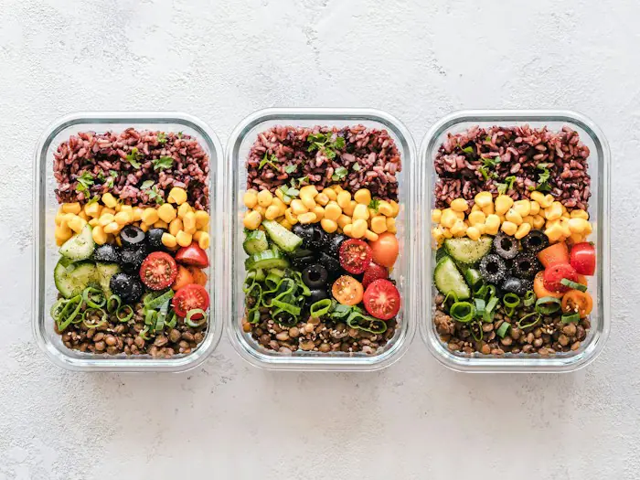

- Kilo verme
- Kilo koruma
- Duygusal yeme
Kilo yönetimi
Aç kalmadan, porsiyon ve öğün düzeniyle kilo vermek ya da vermiş olduğunuz kiloyu korumak için. Duygusal yeme ve gece atıştırmaları da konuştuğumuz konular arasında.
İlk görüşme · 60 dk
Randevu alİlk görüşmede tahlillerinize bakıyor ve vücut analizi yapıyoruz. Planınız iş saatlerinize ve sevdiğiniz yemeklere göre hazırlanıyor, kontrol görüşmelerinde birlikte güncelleniyor.

12 yıl
klinik beslenme deneyimi
3 uzman
diyetisyen, tek çatı altında
60 dk
ilk görüşme ve vücut analizi
7 gün
içinde ilk kontrol, sonra haftalık takip
Hazır listeler dağıtmıyoruz. Yaşınızı, hareket düzeninizi, tahlil sonuçlarınızı ve mutfağınızda gerçekten ne olduğunu konuşarak başlıyoruz.
Aç kalmadan, porsiyon ve öğün düzeniyle kilo vermek ya da vermiş olduğunuz kiloyu korumak için. Duygusal yeme ve gece atıştırmaları da konuştuğumuz konular arasında.
İlk görüşme · 60 dk
Randevu al
İnsülin direnci, tip 2 diyabet, PCOS, tiroit hastalıkları ve yüksek kolesterolde hekiminizin tedavisiyle uyumlu, tahlillerinize göre güncellenen bir beslenme programı.
Tahlil değerlendirmesi dahil
Randevu al
Antrenman saatine göre karbonhidrat ve protein zamanlaması, yarış ve kamp dönemi planları.
Vücut kompozisyonu
RandevuTrimesterlere göre değişen ihtiyaçlar, bulantı dönemi, kilo takibi ve emzirirken enerji dengesi.
Hekiminizle uyumlu
RandevuSeçici yeme, okul beslenmesi ve büyüme takibi. Görüşmelere aileyle birlikte başlıyoruz.
Aileyle birlikte
RandevuŞehir dışından veya yoğun bir tempodan katılanlar için görüntülü görüşme. Evde ölçüm almayı birlikte öğreniyoruz.
Türkiye ve yurt dışı
Randevu


Plan ilk görüşmede bitmiyor. Bayram sofrası, tatil ya da yoğun bir iş haftası geldiğinde kontrol görüşmesinde birlikte güncelliyoruz.
Sağlık geçmişiniz, kullandığınız ilaçlar, son tahlilleriniz ve üç günlük besin kaydınız üzerinden konuşuyoruz.
Biyoempedans cihazıyla yağ, kas ve su oranınızı ölçüyoruz. Tartıdaki tek bir sayıya bakmıyoruz.
Sevdiğiniz yemekler, mesai saatleriniz ve bütçenizle uyumlu plan e-postanıza gelir.
Kısa kontrol görüşmeleri ve hafta içi mesaj desteğiyle planı gerektiğinde güncelliyoruz.
“Danışanlarımın çoğu ne yemesi gerektiğini aşağı yukarı biliyor. Zorlandıkları an, akşam işten aç çıktıkları saat. Planı önce o saate göre kuruyoruz.”

60 dk ilk görüşme · 48 saat içinde kişisel plan · Haftalık kontrol ve mesaj desteği
Randevu alHer uzmanın ağırlıklı çalıştığı alan farklı. Randevu alırken konunuzu seçtiğinizde size uygun uzmanlar öne çıkar.
Klinik beslenme alanında yüksek lisans yaptı. On iki yıldır insülin direnci, diyabet ve kilo yönetimi üzerine çalışıyor.

Amatör ve lisanslı sporcularla çalışıyor. Antrenman programına göre öğün zamanlaması ve vücut kompozisyonu takibi yapıyor.

Gebelik, emzirme ve çocukluk dönemi beslenmesi üzerine çalışıyor. Seçici yeme sorunu yaşayan çocuklarla aile odaklı görüşmeler yapıyor.
Bu hesaplamalar genel bir fikir verir. Görüşmede aynı değerleri vücut analizi ve tahlillerinizle birlikte yorumluyoruz.
Üç farklı hedef için hazırladığımız örnek haftalar. Porsiyonlar ortalama bir yetişkine göredir; size özel plan görüşmede hazırlanır.
Bu menüler genel bir örnektir; gebelik, kronik hastalık, ilaç kullanımı veya 18 yaş altı gibi durumlarda doğrudan uygulanmamalıdır. Değerler yaklaşıktır.
Çoğu 30 dakikadan kısa sürüyor ve malzemeleri mahalle marketinde bulunuyor. Her tarifte porsiyon başına besin değerleri var.
Görüşme ücretlerini baştan paylaşıyoruz. Online görüşmeler, yüz yüze görüşmelerle aynı içeriktedir.
Nereden başlayacağını görmek isteyenler için.
Düzenli takip ve her hafta güncellenen plan.
Alışkanlıkların oturması için önerdiğimiz süre.
Kurumsal beslenme programları
Şirket çalışanlarına yönelik seminer ve bireysel görüşme paketleri için ayrıca teklif hazırlıyoruz.
Sonradan ek ücret çıkmaması için baştan netleştiriyoruz.
Dahil
Dahil değil
Uzmanların boş saatlerini görüp randevunuzu buradan ayırabilirsiniz. Aynı gün için en erken bir saat sonrasına randevu verilebiliyor.
--:--
Şu an · Türkiye saati
Randevunuzu 24 saat öncesine kadar ücretsiz iptal edebilirsiniz.
Danışanlarımızın en sık sorduğu konuları, güncel bilimsel kaynaklara dayanarak yazıyoruz.
Tek bir mucize besin yok; ama tabak düzeni, lif, protein ve yemekten sonra kısa bir yürüyüş kan şekerinizde fark yaratır.
16:8 aralıklı oruç nedir, çalışmalar ne diyor, kimler uygulamamalı ve oruç penceresi nasıl açılmalı? Diyetisyen gözüyle pratik bir rehber.
“Günde 8 bardak su” kuralı nereden geliyor? Kilonuza, hareketinize ve havaya göre su ihtiyacınızı nasıl hesaplayacağınızı ve yeterli içip içmediğinizi nasıl anlayacağınızı anlatıyoruz.
Akdeniz tipi beslenmenin temel ilkeleri, kalp sağlığıyla ilgili kanıtlar ve zeytinyağlılar, bakliyat ve balıkla Türk mutfağına nasıl uyarlanacağı.
Günde kilo başına kaç gram protein gerekir? Hareketsiz yetişkinler, sporcular ve yaşlılar için protein ihtiyacı, öğünlere dağılım ve toz protein hakkında bilmeniz gerekenler.
İçindekiler listesi, porsiyon tuzağı, şekerin farklı adları, tuz ve yağ değerleri: gıda etiketlerini 5 adımda doğru okumayı öğrenin.
Yaklaşık 60 dakika sürüyor. Sağlık geçmişinizi, kullandığınız ilaçları, uyku ve hareket düzeninizi konuşuyor; biyoempedans cihazıyla vücut analizi yapıyoruz. Tahlilleriniz varsa birlikte değerlendiriyoruz. Kişisel planınız 48 saat içinde e-postanıza gönderiliyor.
Son 3 ay içindeki kan tahlilleriniz, kullandığınız ilaç ve takviyelerin listesi ve mümkünse üç günlük besin kaydınız yeterli. Vücut analizinin doğru sonuç vermesi için görüşmeden önceki 2 saatte ağır yemek yememenizi, 12 saat içinde yoğun egzersiz yapmamanızı öneriyoruz.
Plan ve takip açısından aynı içeriği sunuyor. Tek fark vücut analizinin yapılamaması; bunun yerine evde bel çevresi, kilo ve fotoğrafla takip yöntemini birlikte kuruyoruz. İstanbul’daysanız üç ayda bir klinikte ölçüm almanızı öneriyoruz.
Randevu saatinden 24 saat öncesine kadar, onay e-postanızdaki referans koduyla bu sayfadaki “Randevu iptali” bölümünden ücretsiz iptal edebilirsiniz. Daha yakın saatlerdeki değişiklikler için lütfen bizi arayın veya WhatsApp’tan yazın.
Hayır. Kilo değişimi hormonlar, uyku, stres, ilaçlar ve başlangıç ağırlığı gibi pek çok şeye bağlı. Sağlıklı bir hız genellikle haftada 0,5–1 kg arasındadır. Bize kesin rakam vaat eden bir programa karşı dikkatli olmanızı öneririz.
Hayır, ilaçlarınızla ilgili kararları yalnızca hekiminiz verir. Beslenme planını hekiminizin tedavisiyle uyumlu hazırlıyor, gerektiğinde sizin onayınızla hekiminizle iletişime geçiyoruz.
2 yaşından itibaren. 12 yaş altındaki çocuklarla görüşmeleri ebeveynle birlikte yapıyoruz; çocuklara kilo odaklı “diyet” vermiyor, ailenin sofra düzeni üzerinden çalışıyoruz.
Hayır. Herhangi bir ürün satışı yapmıyor, marka önermiyoruz. Tahlillerinizde bir eksiklik görülürse takviye kararı için sizi hekiminize yönlendiriyoruz.
Nakit, kredi kartı ve havale ile ödeme alıyoruz; 3 aylık programda kredi kartına 3 taksit yapılabiliyor. Her görüşme için fatura düzenleniyor. Bazı özel sağlık sigortaları diyetisyen görüşmelerini karşılıyor; poliçenizi kontrol etmenizi öneririz.
Bilgileriniz 6698 sayılı KVKK kapsamında yalnızca randevu ve danışmanlık amacıyla işlenir, üçüncü kişilerle paylaşılmaz. Ayrıntılar aydınlatma metnimizde yer alıyor.
Cevabını bulamadığınız bir soru mu var? Asistanımıza yazın ya da WhatsApp’tan ulaşın; mesai saatlerinde bir diyetisyen yanıtlıyor.
Planınızla ilgili sorularınızı WhatsApp’tan yazabilirsiniz; mesai saatlerinde bir diyetisyen yanıtlıyor.
WhatsAppModa Caddesi üzerindeyiz; Kadıköy iskelesinden yaklaşık 10 dakika yürüme mesafesi. Binada asansör var, en yakın otopark 150 metre ileride.
Moda Cad. No: 48, Kat 3, Kadıköy / İstanbul
Kadıköy iskelesi 10 dk · Moda tramvay durağı 3 dk yürüme
Google Haritalar’da yol tarifi al
| Pazartesi | 09:00 – 20:00 |
|---|---|
| Salı | 09:00 – 20:00 |
| Çarşamba | 09:00 – 20:00 |
| Perşembe | 09:00 – 20:00 |
| Cuma | 09:00 – 20:00 |
| Cumartesi | 10:00 – 15:00 |
| Pazar | Kapalı |